MC 齐喷催熟树厂极限效率定理和树厂理论效率的计算
1.总述：
从树厂诞生到现在，经过很多大佬的探索和研究，常规架构已经发展完善，部分架构来说已经到达了极限，列如四发射器16gt双线程树厂。那么，我们是否可以进一步发掘树厂理论，创造一个类似“可逆热机的“卡诺定理””一样的公式，来说明各类单木树厂的效率极限值？且听RSS分析：
建模工具：Python（IDE：pycharm）
Excel（用于制表）
2.正文：
可逆热机的卡诺定理指出：“可逆热机的效率最大值只和高低温热库的温度Tmin Tmax有关”任何非可逆热机效率都低于同类型卡诺热机的效率。可以说，卡诺定理规定了热机效率的最大值。那么，我们将其类比到树厂，探究n个发射器，m gt周期（最短种树间隔）树厂的极限效率（每分钟处理多少棵树）。同时将各个数量发射器数目，各个gt周期树厂的实际理论效率列举成表格，供大家参考。
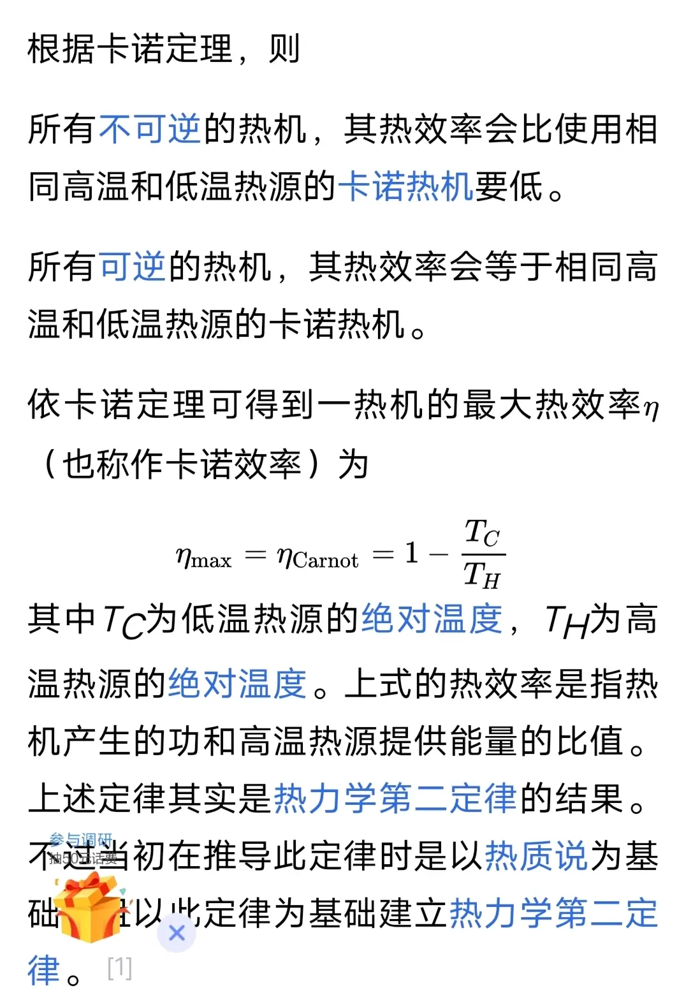
可逆热机的卡诺定理
根据linlin的单木理论，树苗在接受n发骨粉预催熟，在长树窗口处于第二阶段的概率是：P二阶段 ＝（1-0.1^n）/2；在m个发射器齐喷催熟一次中，树苗生长一次（阶段变化一次）的概率为：P生长＝（1-0.55^m）。（树苗接受一发骨粉生长的概率为0.45，m次发射器一次齐喷可以看做m次伯努利试验，符合二项分布率。）发射器周期是4gt（0.2秒），知道这些数据，我们来计算常见单木树厂的实际理论效率：
对于地狱蘑菇，不存在生长检测范围，不存在第一阶段，催熟成功立刻长出。对于杜鹃花，不存在第一阶段，催熟成功后检测空间范围，通过就立刻长出，不通过还保留在第二阶段。这两种是特殊的树苗，预催熟对他们毫无意义。
[MCBE][水]部分树苗的生长机制 站内专栏 »
三发射器双线程16gt树厂
以三发射器16gt树厂（12gt齐喷预催一次）为例子：因为树苗催熟是概率问题，可能失败，所以树苗可能在16gt，20gt，24gt，28gt…生长成树，各自有各自的概率权重，依次递减，总和为概率归一化的1。树厂以16gt（0.8s）运行，每分钟就是60÷0.8＝75树/min，20gt就是60树/min，24gt就是50树/min，以此类推做除法，可以得到树厂以不同gt周期运行每分钟多少棵树。下面开始计算树厂以上周期运行的概率权重：
（1）树厂理论效率的计算：
以16gt三发射器12gt三发预催为例子：
16gt长树要求树苗在长树窗口必须处于第二阶段，而且第16gt接受骨粉后应该生长成功。所以：P16gt＝P二阶段×（1-0.55^3）＝0.4995×0.833625＝0.4163956875
20gt分为两种情况：
情况一：16gt长树窗口前处于第二阶段，但16gt催熟失败，20gt催熟成功。P20gt1＝P二阶段×（1-0.55^3）×0.55^3
情况二：16gt长树窗口树苗处于第一阶段，16和20gt都催熟成功，变成三阶段树木。P20gt2＝（1-P二阶段）×0.55^6
24gt也分为两种情况：
情况一：处于第二阶段，但16gt，20gt都失败，24gt才催熟成功。概率不再赘述类似几何分布。
情况二：处于第一阶段，在16gt和20gt失败一次成功一次，进入第二阶段，符合二项分布；在24gt催熟成功，变成三阶段树木。概率也不赘述。里面涉及到二项分布的一些知识。
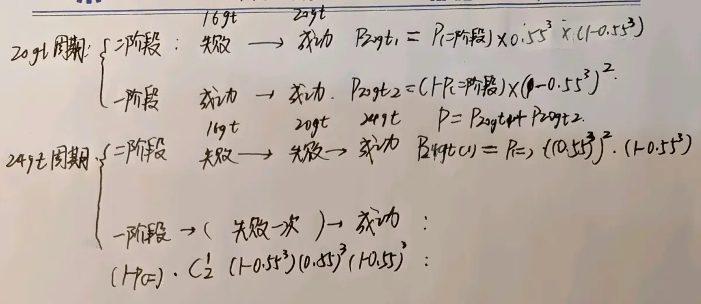
20gt周期和24gt周期的概率权重计算
那么以此类推以后的周期只有两种情况：
情况一：处于二阶段，但是在长树窗口前n-1次催熟均失败，第n次催熟成功，变成树木。
情况二：处于第一阶段，但是在前n-1次内只成功一次，变成第二阶段，第n次催熟成功，生长成树。
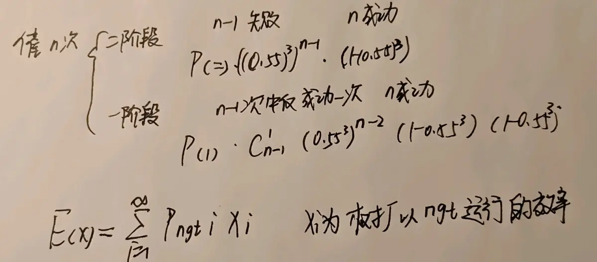
之后周期的概率权重
再这样套用数学期望公式，就可以得到树厂理论的概率（单位：棵/min），再乘以60就是每小时处理多少棵树的期望，再乘以平均树高（我会在后续给出）就可以得到树厂的理论效率。
知道原理后，下面是Python代码及其实现：
（2）Python代码以及实验结果
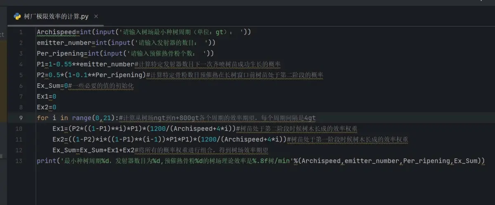
Python源代码，IDE是pycharm
声明：
1.该代码输入树厂的发射器数目，预催熟消耗骨粉数量和树厂最小种树周期，输出树厂的理论效率（每分钟处理多少棵树）。代码可以算出来树厂ngt到n+800gt时间段各周期的概率权重，误差小于百万分之一。
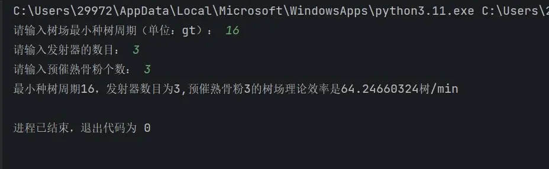
输入输出案例
（3）代码正确性的验证：
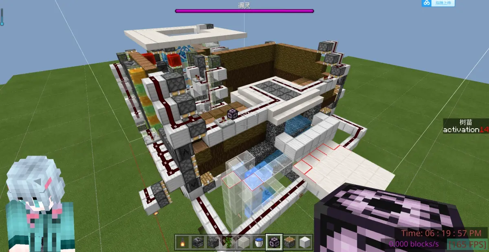
16gt三发射器双线程，12gt给予三发骨粉预催熟
这是一个16gt三发射器双线程树厂（在我动态有存档），在第12gt拥有三个骨粉的齐喷预催熟，经过一小时的种树测试，树厂平均效率是64.053树/min，和上面的理论效率64.24660324树/min，两者相差不足三百分之一，说明代码计算出来的和实际情况很符合。
林林小宇的14gt樱花树厂
这是林林小宇的一个骨粉预催，三发射器的14gt树厂，经过代码计算理论效率是71.20189839树/min，和上面五分钟测试的数据误差大概百分之二。这考虑到测量时间短的原因，不过误差很小，基本符合实际情况。
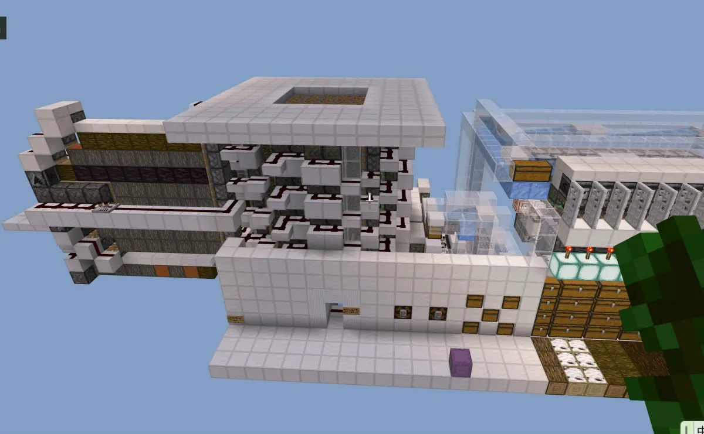
20gt土轮全树种，三发射器，16gt三发预催熟
这是键盘O大佬和众多树厂大佬联合出品的兼容樱花的20gt土轮全树，经过一小时测试，金合欢52.3树/min，云杉52.1/min，白桦52.7/min，理论效率代码计算的是52.72221416树每分钟，三个数据与理论值相差不足百分之一十分准确。
以上三个数据说明代码是正确的，可以应对不同架构不同数量发射器齐喷催熟，不同数目骨粉预催熟的树厂效率理论值。下面放出结论：
（3）结论：
rss在这里制作了一张图表，详细记述了各类单木树厂的理论效率，用来参考，同时也是生存能实现的树厂的最大效率。以后就可以查表大概知道树厂的效率大概在什么范围左右了。
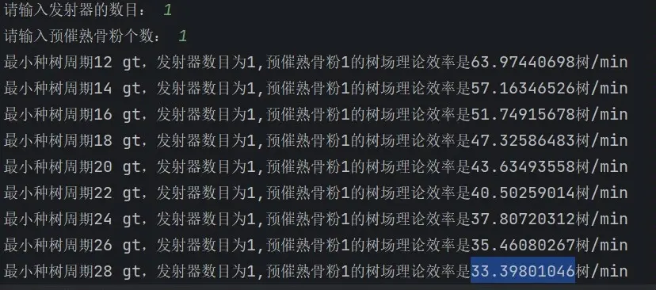
程序跑出来的各个树厂理论效率的值
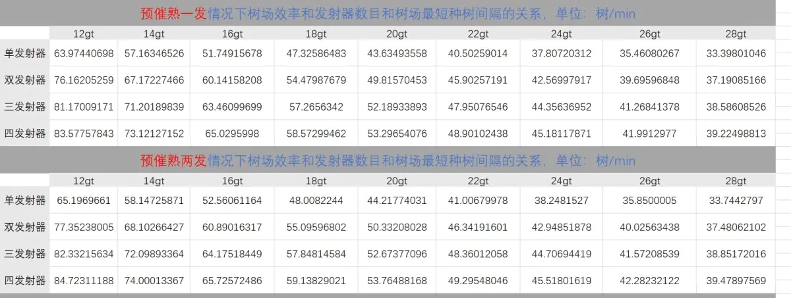
一两个骨粉预催熟下各类单木树厂的理论效率
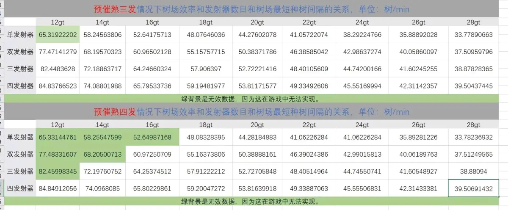
三四个骨粉预催熟下各类单木树厂的理论效率
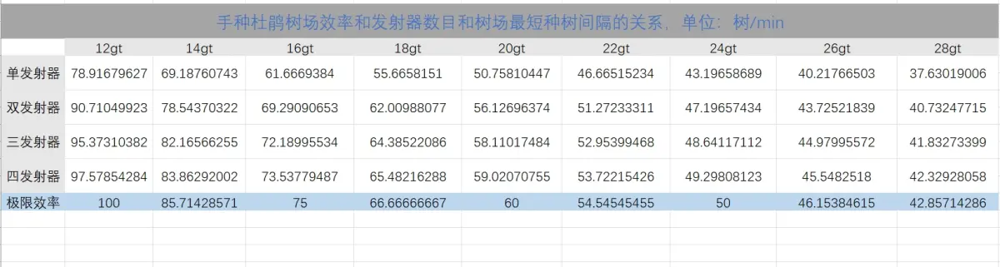
手种杜鹃花树厂的理论效率和极限效率
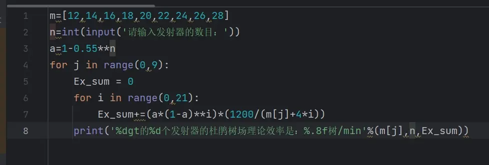
计算手种杜鹃花树厂的源代码
我们发现了一些不同的结论：
1.双发射器到三发射器的提升十分明显，但是三发到四发射器的提升很微小，只有一两棵树的提升。如果追求实用性，尽量还是选择三发射器，这样更节省骨粉和卡顿，底座也更为简单。
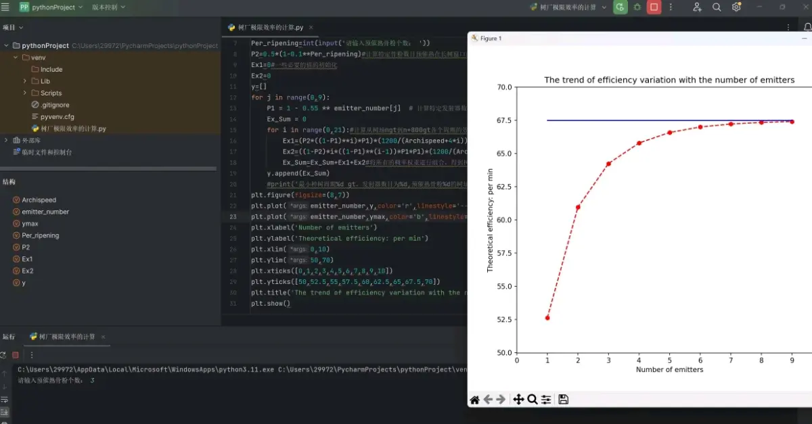
16gt三个骨粉预催熟树厂理论效率和发射器数量的关系（不过实际上树厂最多四个发射器位置）
2.随着发射器数量的提升，树厂的效率趋单调递增并近于某一个最大值，后续我会给出求解方法。
3.发射器数目和预催熟所用骨粉数目在越快速的树厂提升越明显，在高gt慢速树厂的提升逐渐下降。所以对于冲击世界纪录的玩家，多增加预催熟和发射器数目比较必要。
4.对于杜鹃树和地狱蘑菇，预催熟对他们毫无意义，因为树苗一被放置就处于第二阶段。
考虑到实际玩家种树有回弹和卡顿影响等等，效率可能上下±1浮动。
（4）树厂极限效率定理
结合之前的计算过程，如果发射器数量趋于∞，一次齐喷催熟概率1-0.55^n趋于1，也就是说这时候树苗接受一次预催熟是必定生长成功的。在预催熟次数趋于∞的时候，长树窗口前树苗处于二阶段的概率0.5×（1-0.1^n）趋与0.5，那么对于一个ngt为周期的树厂，长树周期只存在第ngt和第n+4gt两种情况。
1.第ngt长树，说明树苗之前处于第二阶段，在第ngt长树窗口一定长成树，概率为0.5×1为0.5。
2.第n+4gt长树，说明树苗之前处于第一阶段，第ngt一次催熟必定生长，第n+4gt一次催熟必定成树，概率是0.5×1×1＝0.5。
所以树厂效率期望为树厂以ngt周期运行和n+4gt运行的平均值。
这就是树厂能达到的极限效率，它只和树厂最小种树周期有关系，而且通过何种手段效率只能无限趋近这个值，不能超过这个值。这类似热机中的卡诺定理，任何可逆热机效率无限趋近卡诺定理，除非没有损耗和额外的传热浪费。
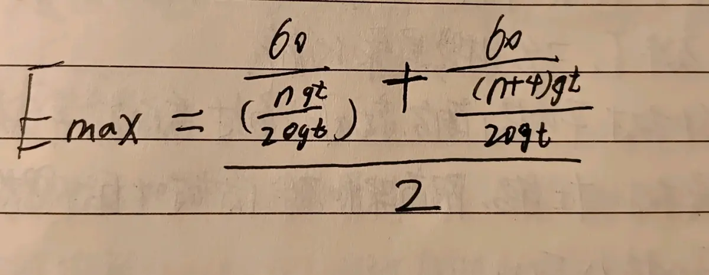
ngt树厂的效率最大值（一般n＞＝10），单位是每分钟处理多少棵树。
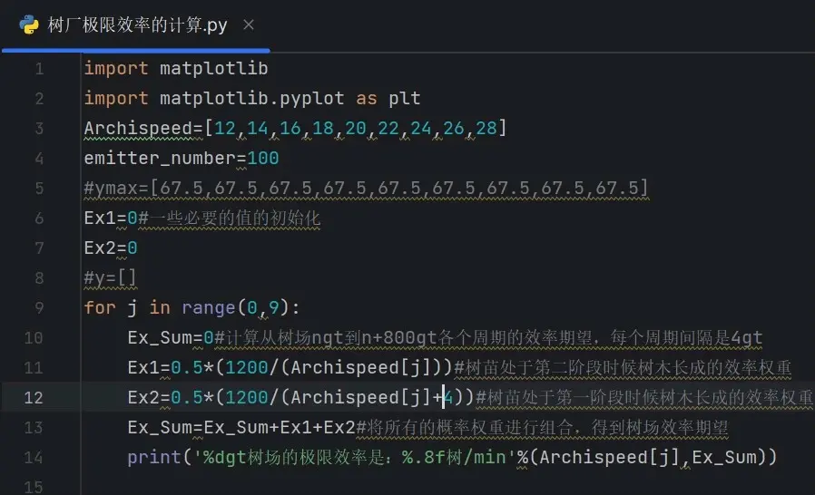
代码实现
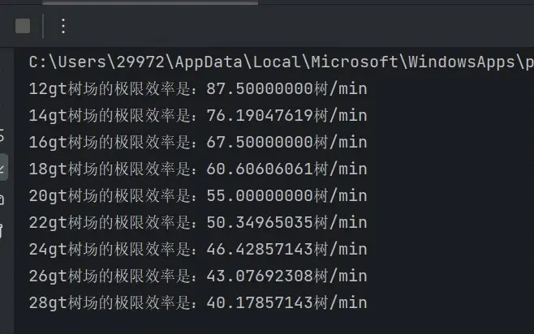
代码的输出结果：各个树厂理论最大效率
这也解释了为什么上面那张图最后随着发射器数量递增效率无限趋近67.5，因为67.5是16gt树厂能达到的理论效率极限。
对于杜鹃树和地狱树，因为他们不存在第一阶段。极限就是长树窗口立刻催熟成功并长出，换算成公式就是：60s÷最小种树周期。上表已经给出手种杜鹃树的极限效率。
后记：
通过这次建模练习，也算学会了怎么使用Python的matplotlib库制表。同时为树厂最大的上限盖棺定论了，希望更多人受到参考。写的有些复杂，大家只看结论就行，感谢观看。特别感谢linlin的单木理论。